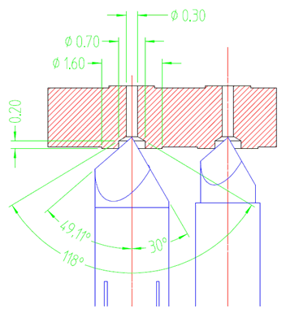

Pogo via depth example
In this example a small 12 mil through via goes all the way through the board. A controlled depth drill 27 mil FHS via serves as pogo pin contacting area. All dimensions in the drawing below are in mm.

For the nominal 26 mil FHS via with a +1/-3 mil tolerance you can assume a maximum pin depth of 13 mils. This applies both for the Pogo pin with knife edge tip and for the Pogo pin with cone shaped tip.
When using controlled depth drilling you must specify a 20 mil +/- 7 mil drill depth to accommodate the drill tolerance and guarantee a 13 mil depth.
Functional changes
- Introduced before SmarTest 6.3.2